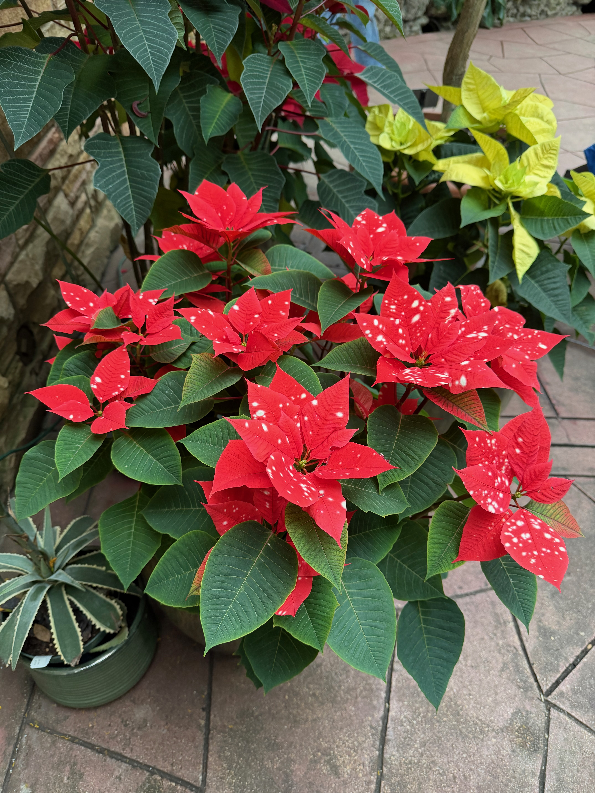

My Blog
My Blog
This is a “uses” page — a running list of the hardware and software I reach for most often.
Hardware
- A laptop with far too many browser tabs open
- A mechanical keyboard
- Good headphones
Software
- Editor: whatever gets out of my way
- Terminal: a tiling setup with a fast shell
- Static site generator: Hugo (this very site)
Services
- A static host for this site
- A feed reader for keeping up with the blogs I follow
This page is inspired by the uses.tech movement. Copy the idea, change the contents to match your own setup.